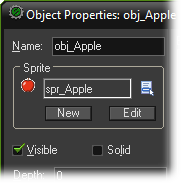
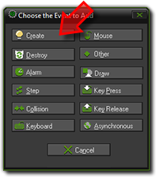
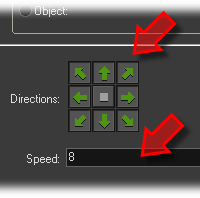

Tutorial
Page 4 of 15
The Apple Object
We are now going to create the apple object. Again press the button on the toolbar
with the green ball, to create a new object. Give the object as a name obj_apple
and select the apple sprite for it. The apple is not solid. So the form should look as follows:

Our apple object will need some behavior. First of all it must move around. And secondly
it must react to mouse clicks. In GameMaker behavior is defined as follows: Objects
get events. An event happens when for example the object is created, when it collides with another
object, and when the user presses the mouse button or a key on the keyboard. You can indicate that
the object should react to certain events by executing actions. For example when the create event
happen we can execute an action to start moving.
In the object form, in the middle there is the list of events (empty at the moment). To the right
of this there is the list of actions to be executed for the selected event. And at the far right there
are six tabbed pages with all the different actions you can use.
Our first step is to make sure the apple starts moving when it is created. Press the button Add Event.
A form appears in which you select the Create event:

The event is added to the list. We can now include actions in this event by dragging them into the action
list. Press and hold the mouse on the top-left action with the eight red arrow, drag it into the action list and
release the mouse button. A window will open in which you can indicate the directions of motion and the speed. Press
all eight arrows to indicate the apple can move in any of these directions. As a speed, type in 8. Finally press OK to close the window.
